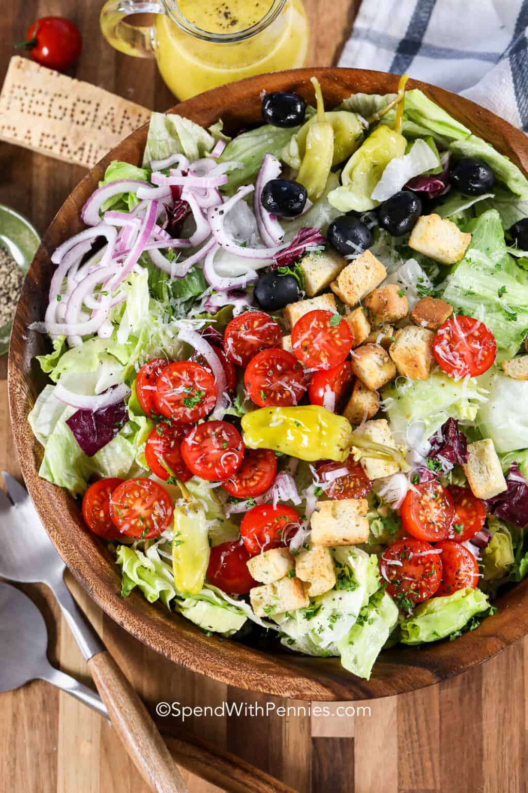

Italian Salad
Note: Recipe from Spend with Pennies.

Dish Description
Italian Salad is filled with crisp lettuce, juicy tomatoes, olives, red onions and of course zesty pepperoncinis. We add in a simple homemade Italian vinaigrette for the perfect fresh salad.
Ingredients
- 8 cups lettuce romaine or iceberg
- 2 cups radicchio
- 2 cups cherry tomatoes (halved)
- ¼ red onion (thinly sliced)
- 1 cup seasoned croutons
- ½ cup black olives (pitted)
- 6 pepperoncini peppers
- ¼ cup parmesan cheese or to taste (shredded)
- ½ cup Italian dressing (homemade or store bought)
- 1 tablespoon fresh herbs (parsley or basil)
Steps
-
Wash and dry lettuce and radicchio.
-
Add remaining ingredients along with dressing to taste.
-
Mix and top with freshly shredded parmesan cheese.